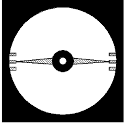
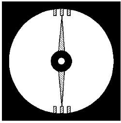
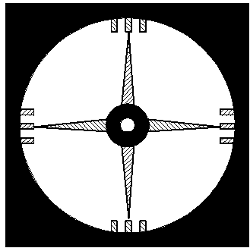

Vertical (image 1) and horizontal (image 2) pointer test can be used to examinated phoria. In this area they double functionality of classical cross and bracket tests. But existing of aditional non-central fusion stimulus is primary difference. It's external black circle. So examinating phoria using pointer test we receive result nearest to asociated phoria or fixation disparity.
Principle of vertical and horizontal pointer test work is analogical to cross tests. One eye perceive immobile scale and second perceive pointer which can be move perpendicular to pointed direction:
For both tests result is calculated from following equation on the basics of pointer move from primary position x and distance from patient to screen l.
Double pointer test is shown on picture 3. During examination patient can independently:
Using this test it's possible to distinguish between phisiological cyclophoria and seeming cyclophoria caused by cens with cylindrical power:
Result is presented as actual angle of rotation horizontal and vertical pointer. Therefore interpretation is needed to make diagnosis.


